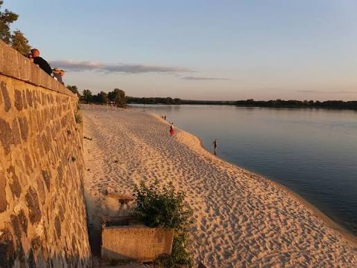
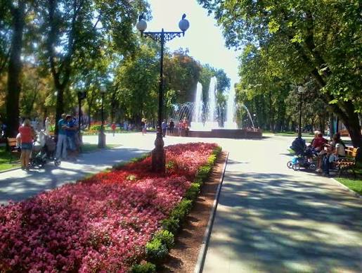
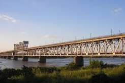

Кременчук - це мальовниче місто на обох берегах Дніпра, яке поєднує в собі багату історію, потужний
промисловий потенціал та затишну атмосферу.
(Наведіть курсор на зображення, щоб побачити спливаючий текст!)


